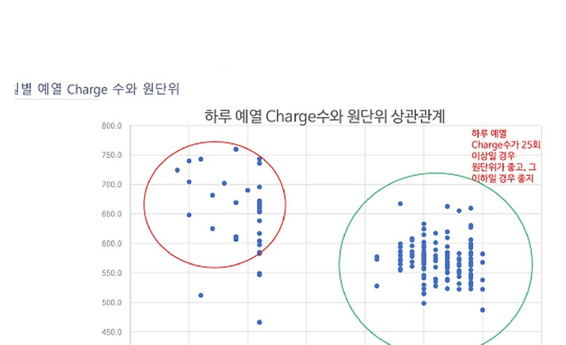

데이터로 찾는 산업·건물 에너지절감 실무 — 78쪽
그림 16-3. 일일 예열 Charge 수와 전력원단위의 군집 차이. [S07] 금속 용해로 운전최적화 분석 자료를 비식별 형태로 복원. IMPLEMENTATION | 용해로 원단위는 생산량과 Charge 구성의 영향을 받으 므로, 동일 생산조건에서 예열과 조업시간을 관리하고 개선 후 실제 생산조건을 반영한 M&V 로 검증한다. CASE 21 | DEEP DIVE — 일관제철소 산소공장 압축기 원단위·최적 가동 대수·실시간 운전최적화 일관제철소 산소공장의 공기·산소·질소 압축기 40 대를 대상으로 압축기별· 공장별 원단위, 부하율, 가동상태와 공정가스 생산·공급 데이터를 실시간 분 석하고 고효율 압축기 우선운전과 최적 가동대수를 제시하는 사례다.

인쇄본 기준 p. 78